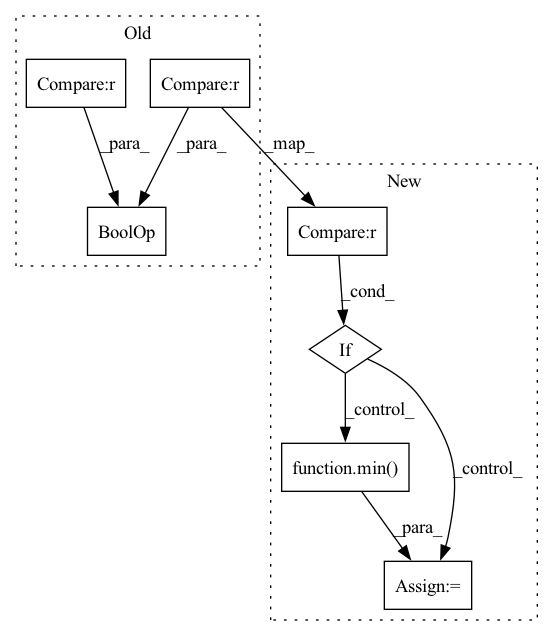

Pattern ID :815
Before Change
if bbox[0] > bbox[2] or bbox[1] > bbox[3] or bbox[0] < 0 or bbox[1] < 0 or bbox[2] < 0 or bbox[3] < 0:
logger.warning(f"ignoring invalid prediction with bbox: {bbox}")
continue
if full_shape is not None and (
bbox[1] > full_shape[0]
or bbox[3] > full_shape[0]
or bbox[0] > full_shape[1]
or bbox[2] > full_shape[1]
) :
logger.warning(f"ignoring invalid prediction with bbox: {bbox}")
continue
After Change
bbox[3] = max(0, bbox[3])
// fix out of image box coords
if full_shape is not None :
bbox[0] = min(full_shape[1], bbox[0])
bbox[1] = min(full_shape[0], bbox[1])
bbox[2] = min(full_shape[1], bbox[2])
bbox[3] = min( full_shape[0], bbox[3])
// ignore invalid predictions
if not (bbox[0] < bbox[2]) or not (bbox[1] < bbox[3]):
logger.warning(f"ignoring invalid prediction with bbox: {bbox}")In pattern: SUPERPATTERN
Frequency: 4
Non-data size: 7
Instances Fragment ID: 3915258
Project Name: obss/sahi
Commit Name: 4747b618363263639c50070a94bd07b42b9ee762
Time: 2022-02-05
Author: 34196005+fcakyon@users.noreply.github.com
File Name: sahi/model.py
M Class Name: Yolov5DetectionModel
N Class Name: Yolov5DetectionModel
M Method Name: _create_object_prediction_list_from_original_predictions(3)
N Method Name: _create_object_prediction_list_from_original_predictions(3)
M Parent Class: DetectionModel
N Parent Class: DetectionModel
M File Name: sahi/model.py
N File Name: sahi/model.py
M Start Line: 451
M End Line: 474
N Start Line: 449
N End Line: 477
Before Change
w = int(round(math.sqrt(target_area * aspect_ratio)))
h = int(round(math.sqrt(target_area / aspect_ratio)))
if random.random() < 0.5 and min(ratio) <= (h / w) <= max(ratio) :
w, h = h, w
if w <= img.size[0] and h <= img.size[1]:After Change
// Fallback to central crop
in_ratio = img.size[0] / img.size[1]
if in_ratio < min(ratio) :
w = img.size[0]
h = int(round(w / min( ratio) ))
elif in_ratio > max(ratio):
h = img.size[1]
w = int(round(h * max(ratio))) Fragment ID: 3915435
Project Name: feng-lab/pytorch-image-models
Commit Name: 66634d2200efd5cb3f0f8ebb45c7628c57549fe3
Time: 2019-08-12
Author: rwightman@gmail.com
File Name: timm/data/transforms.py
M Class Name: RandomResizedCropAndInterpolation
N Class Name: RandomResizedCropAndInterpolation
M Method Name: get_params(3)
N Method Name: get_params(3)
M Parent Class: object
N Parent Class: object
M File Name: timm/data/transforms.py
N File Name: timm/data/transforms.py
M Start Line: 110
M End Line: 127
N Start Line: 110
N End Line: 134
Before Change
):
logger.warning(f"ignoring invalid prediction with bbox: {bbox}")
continue
if full_shape is not None and (
bbox[1] > full_shape[0]
or bbox[3] > full_shape[0]
or bbox[0] > full_shape[1]
or bbox[2] > full_shape[1]
) :
logger.warning(f"ignoring invalid prediction with bbox: {bbox}")
continue
After Change
bbox[3] = max(0, bbox[3])
// fix out of image box coords
if full_shape is not None :
bbox[0] = min(full_shape[1], bbox[0])
bbox[1] = min(full_shape[0], bbox[1])
bbox[2] = min( full_shape[1], bbox[2])
bbox[3] = min(full_shape[0], bbox[3])
// ignore invalid predictions
if not (bbox[0] < bbox[2]) or not (bbox[1] < bbox[3]): Fragment ID: 3915385
Project Name: obss/sahi
Commit Name: 4747b618363263639c50070a94bd07b42b9ee762
Time: 2022-02-05
Author: 34196005+fcakyon@users.noreply.github.com
File Name: sahi/model.py
M Class Name: MmdetDetectionModel
N Class Name: MmdetDetectionModel
M Method Name: _create_object_prediction_list_from_original_predictions(3)
N Method Name: _create_object_prediction_list_from_original_predictions(3)
M Parent Class: DetectionModel
N Parent Class: DetectionModel
M File Name: sahi/model.py
N File Name: sahi/model.py
M Start Line: 290
M End Line: 338
N Start Line: 290
N End Line: 336